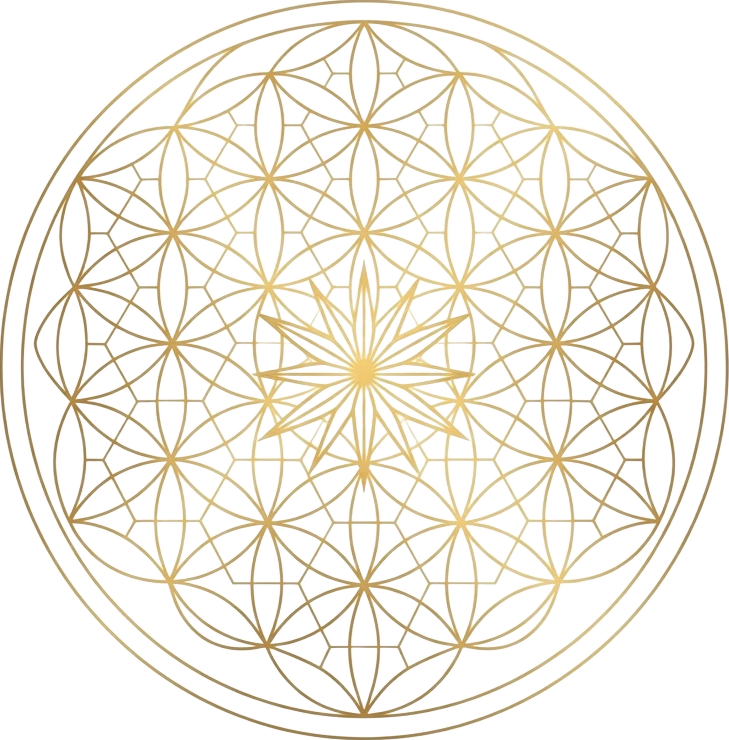
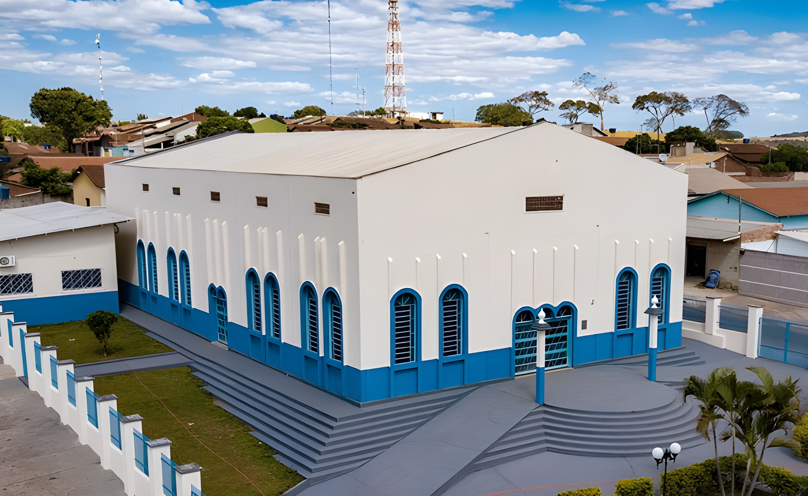

Terço Mariano na Igreja
24 de Out de 2026
Nerópolis - GO

"Fazei tudo o que Ele vos disser"
— João 2,5
"Maria, ensina-nos a dizer sim a Deus
em todos os momentos."
A Paróquia Imaculado Coração de Maria, em Nerópolis - GO, é uma comunidade de fé, oração e amor a Deus, seguindo o exemplo de Maria, nossa Mãe.

24 de Out de 2026
20 de Out de 2026
17 de Out de 2026
“Tudo por Jesus,
nada sem Maria.”
Sábado: 19h • Domingo: 07h, 09h e 19h